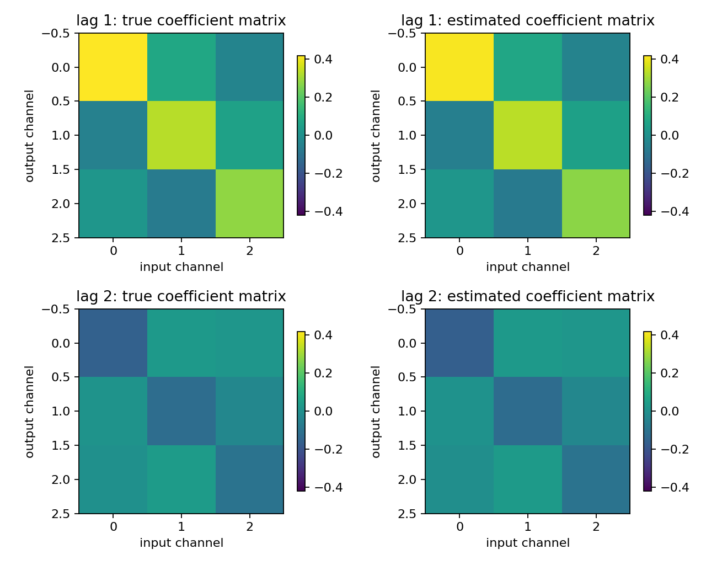
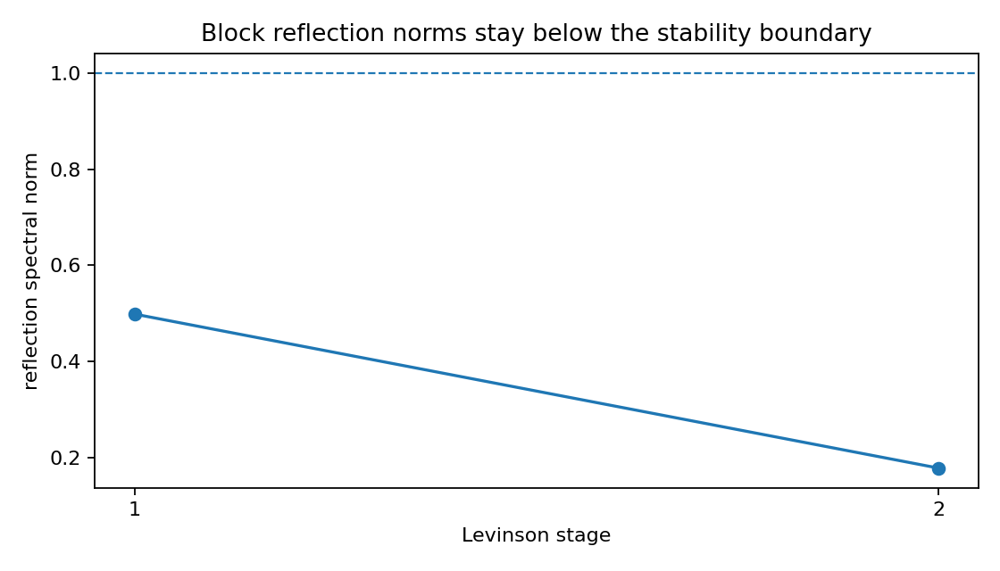
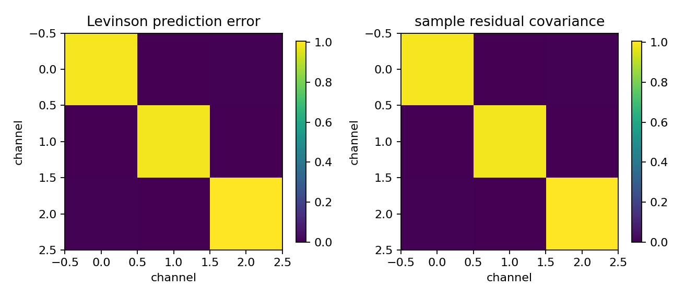

Multichannel AR with block Levinson-Durbin¶
Tutorial goal
Estimate a vector AR model and compare block Levinson against a dense block-Toeplitz solve.
Note
New to the terminology? See the lattice DSP concept map and the causality/data-use guide for how online, offline, block, and MIMO examples should be read.
Context¶
Scalar AR models generalize to vector autoregressive models where each lag coefficient is a matrix. This tutorial shows how block Toeplitz structure and matrix reflection coefficients enter the multichannel setting.
Key idea and equations¶
Let \(x[n]\in\mathbb{R}^c\) be a vector signal and let
\(e[n]\) be the prediction residual. An order-p vector AR model is
The sample autocovariances \(R_\ell=\mathbb{E}\{x[n]x[n-\ell]^T\}\) form a block-Toeplitz Yule–Walker system for the matrices \(A_1,\ldots,A_p\). Block Levinson–Durbin solves this system recursively and also exposes matrix reflection coefficients \(K_i\). The scalar condition \(|k_i|<1\) becomes the practical matrix diagnostic
The coefficient heatmaps show the estimated \(A_k\); the reflection plot checks the stage norms; the residual-covariance plot checks the remaining multichannel prediction error.
Causality and data use¶
multichannel_autocorrelation and block_levinson_durbin are batch estimation steps: they use a finite multichannel record or covariance sequence. The fitted VAR recursion is causal after the matrices are known, because prediction uses only past samples x[n-k] and the current state/history.
What this example verifies¶
This verifies the batch multichannel AR estimator. The block Levinson result is compared with a dense block-Toeplitz solve, reflection spectral norms are checked, and the residual covariance shows what cross-channel prediction error remains after fitting.
How to read the result¶
Check the coefficient difference against the direct solve, then use the coefficient heatmaps, reflection-norm plot, and residual-covariance plot to see what the matrix AR fit learned.
Run command¶
python examples/multichannel_levinson_ar.py
Run status¶
Return code: 0
Captured stdout¶
channels: 3
order: 2
companion spectral radius: 0.635633
direct/block-Levinson coefficient difference: 7.104e-17
relative coefficient error vs true VAR: 2.791e-02
reflection spectral norms: [0.498023 0.177576]
prediction error covariance trace: 2.991384
sample residual variance trace: 2.991453
takeaway: block Levinson gives a classical MIMO AR/lattice baseline
Figures¶
{kind=link}

multichannel_levinson_coefficients.png¶
{kind=link}

multichannel_levinson_reflection_norms.png¶
{kind=link}

multichannel_levinson_residual_covariance.png¶
Source code¶
1"""Multichannel Levinson-Durbin estimation for a vector AR process."""
2
3from __future__ import annotations
4
5import os
6from pathlib import Path
7
8import numpy as np
9
10import lattice_dsp as ld
11
12
13def _artifact_dir() -> Path:
14 path = Path(os.environ.get("LATTICE_DSP_ARTIFACT_DIR", "reports/example-artifacts"))
15 path.mkdir(parents=True, exist_ok=True)
16 return path
17
18
19def simulate_var(coefficients: list[np.ndarray], samples: int, seed: int = 0) -> np.ndarray:
20 rng = np.random.default_rng(seed)
21 order = len(coefficients)
22 channels = coefficients[0].shape[0]
23 x = np.zeros((samples + 512, channels))
24 noise = rng.normal(size=x.shape)
25 for n in range(order, x.shape[0]):
26 value = noise[n].copy()
27 for lag, a_lag in enumerate(coefficients, start=1):
28 value -= a_lag @ x[n - lag]
29 x[n] = value
30 return x[512:]
31
32
33def _save_figures(
34 *,
35 true_coefficients: np.ndarray,
36 estimated_coefficients: np.ndarray,
37 reflection_norms: np.ndarray,
38 prediction_error: np.ndarray,
39 residual_covariance: np.ndarray,
40) -> None:
41 try:
42 import matplotlib.pyplot as plt
43 except ImportError: # pragma: no cover - optional plotting dependency
44 print("matplotlib is not installed; skipped figures")
45 return
46
47 out_dir = _artifact_dir()
48
49 order = estimated_coefficients.shape[0]
50 fig, axes = plt.subplots(order, 2, figsize=(8.0, 3.2 * order), squeeze=False)
51 limit = float(max(np.max(np.abs(true_coefficients)), np.max(np.abs(estimated_coefficients))))
52 for lag in range(order):
53 for col, (name, values) in enumerate(
54 (("true", true_coefficients[lag]), ("estimated", estimated_coefficients[lag].real))
55 ):
56 ax = axes[lag, col]
57 im = ax.imshow(values, vmin=-limit, vmax=limit)
58 ax.set_title(f"lag {lag + 1}: {name} coefficient matrix")
59 ax.set_xlabel("input channel")
60 ax.set_ylabel("output channel")
61 fig.colorbar(im, ax=ax, shrink=0.78)
62 fig.tight_layout()
63 path = out_dir / "multichannel_levinson_coefficients.png"
64 fig.savefig(path, dpi=160)
65 plt.close(fig)
66 print(f"wrote {path}")
67
68 fig, ax = plt.subplots(figsize=(7.0, 4.0))
69 stages = np.arange(1, len(reflection_norms) + 1)
70 ax.plot(stages, reflection_norms, marker="o")
71 ax.axhline(1.0, linestyle="--", linewidth=1.0)
72 ax.set_xlabel("Levinson stage")
73 ax.set_ylabel("reflection spectral norm")
74 ax.set_title("Block reflection norms stay below the stability boundary")
75 ax.set_xticks(stages)
76 fig.tight_layout()
77 path = out_dir / "multichannel_levinson_reflection_norms.png"
78 fig.savefig(path, dpi=160)
79 plt.close(fig)
80 print(f"wrote {path}")
81
82 fig, axes = plt.subplots(1, 2, figsize=(8.2, 3.6))
83 for ax, name, matrix in (
84 (axes[0], "Levinson prediction error", prediction_error.real),
85 (axes[1], "sample residual covariance", residual_covariance.real),
86 ):
87 im = ax.imshow(matrix)
88 ax.set_title(name)
89 ax.set_xlabel("channel")
90 ax.set_ylabel("channel")
91 fig.colorbar(im, ax=ax, shrink=0.78)
92 fig.tight_layout()
93 path = out_dir / "multichannel_levinson_residual_covariance.png"
94 fig.savefig(path, dpi=160)
95 plt.close(fig)
96 print(f"wrote {path}")
97
98
99def main() -> None:
100 true_coefficients = [
101 np.array([[0.42, 0.08, -0.04], [-0.05, 0.33, 0.06], [0.02, -0.07, 0.28]]),
102 np.array([[-0.16, 0.03, 0.02], [0.01, -0.12, -0.03], [0.00, 0.04, -0.10]]),
103 ]
104 x = simulate_var(true_coefficients, samples=40000, seed=7)
105 r = ld.multichannel_autocorrelation(x, order=2, biased=True, demean=True)
106
107 direct = ld.solve_block_yule_walker_direct(r, order=2)
108 levinson = ld.block_levinson_durbin(r, order=2)
109 residual = ld.multichannel_prediction_error(x, levinson.coefficients)
110
111 true_stack = np.asarray(true_coefficients)
112 coeff_rel_error = np.linalg.norm(levinson.coefficients.real - true_stack) / np.linalg.norm(true_stack)
113 solver_agreement = np.linalg.norm(levinson.coefficients - direct.coefficients)
114 residual_covariance = np.cov(residual.T)
115
116 print("channels:", x.shape[1])
117 print("order:", levinson.order)
118 print("companion spectral radius:", f"{ld.companion_spectral_radius(levinson.coefficients):.6f}")
119 print("direct/block-Levinson coefficient difference:", f"{solver_agreement:.3e}")
120 print("relative coefficient error vs true VAR:", f"{coeff_rel_error:.3e}")
121 print("reflection spectral norms:", np.round(levinson.reflection_spectral_norms, 6))
122 print("prediction error covariance trace:", f"{np.trace(levinson.prediction_error).real:.6f}")
123 print("sample residual variance trace:", f"{np.trace(residual_covariance).real:.6f}")
124 print("takeaway: block Levinson gives a classical MIMO AR/lattice baseline")
125
126 _save_figures(
127 true_coefficients=true_stack,
128 estimated_coefficients=levinson.coefficients,
129 reflection_norms=levinson.reflection_spectral_norms,
130 prediction_error=levinson.prediction_error,
131 residual_covariance=residual_covariance,
132 )
133
134
135if __name__ == "__main__":
136 main()